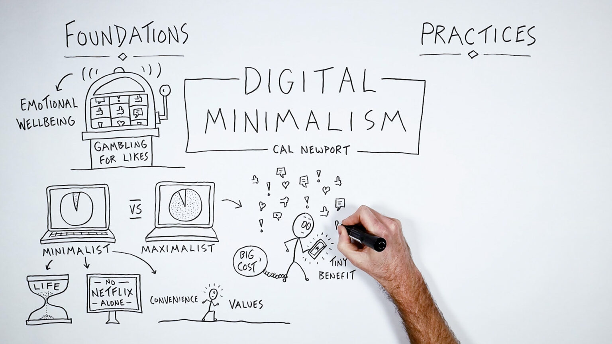

Millions are adopting digital minimalism, a way of life that encourages living better with less screen time, as a result of screen fatigue hitting records, according to a recent report by the European Institute for Digital Health.
In 2025, the study found that 42% of Europeans have reduiced their use of social media and smartphones. The primary causes mentioned by scientists were decreased productivity, anxiety, and poor sleep. In response, tech firms like Apple or Samsung have released "Focus Mode" and "Digital Detox" tools to help users
Experts warn that excessive screen time can lead to burnout and social isolation. "We are witnessing the negative effects of continuous connectivity on mental health," stated Dr. Elise Martin, a psychologist at the University of Paris.
By keeping only necessary apps and establishing screen-free times, digital minimalism encourages people to use technology the right way. Online groups that support this way of life have grown throughout Europe, providing useful resources for better digital practices.
As Dr. Martin pointed out, "For many, disconnecting is no longer about rejection of technology, it's about taking control." This movement's increasing popularity points to an important change in our society.
